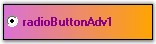

RadioButtonAdv functions similar to the Windows standard RadioButton but it has some additional enhancements. It helps to provide a great look and feel to the RadioButtons. It supports themes, gradient colors, images and shadow text.

Figure 627: RadioButtonAdv Control
See Also
 Features
Features